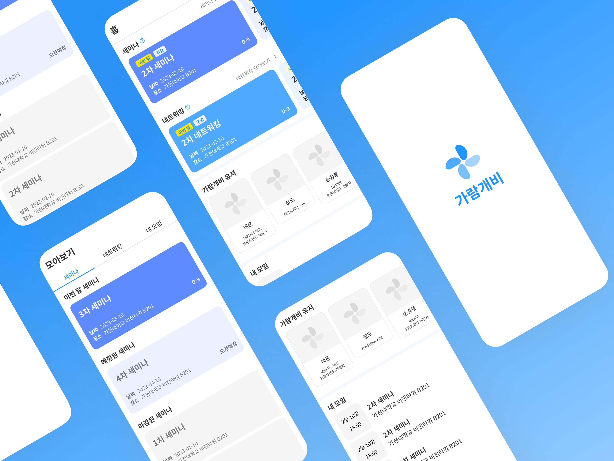

가람개비를 소개합니다.

가람개비는 가천대학교 IT 선후배 커뮤니티 앱입니다.
카카오톡 오픈채팅방인 가천대 IT 개발자 & 스타트업 경력개발발에서 주최되는
네트워킹과 세미나를 편리하게 관리해줍니다.
3월 중으로 구글 스토어와 애플 스토어에서 만나볼 수 있습니다.
XYZ 가설 검증을 위한 데이터 수집
앞서 소개 드렸다시피, 저희는 가천코코네스쿨 2기로 활동 중입니다.
가짜 문 프리토타입에 대해 들어보신 적 있으신가요?
아직 내놓을 게 아무것도 없다 하더라도
제품이나 서비스가 존재하는 것처럼 보일 만한 현관문(웹 사이트 등)을 설치하면,
얼마나 많은 사람이 아이디어에 관심을 가질지 데이터를 얻을 수 있다는 것입니다.
저희는 해당 프로토타입을 바탕으로 XYZ 가설을 검증해 보는 프로젝트를 진행하게 되었습니다.